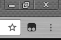
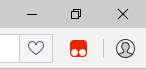

Please select your browser

Chrome

Firefox

Opera
Chrome
Install the Tampermonkey extension.
 Tampermonkey Extension
Tampermonkey Extension
The Tampermonkey icon should appear in your Chrome menu.
Install the script with Tampermonkey.
This adds the $race game to the Tier List Maker.
Tampermonkey Script
Click the Install button on the page that appears.


Firefox
Install the Greasemonkey add-on.
 Greasemonkey Add-On
Greasemonkey Add-On
The Greasemonkey icon should appear in your Firefox toolbar.
Install the script with Greasemonkey.
This adds the $race game to the Tier List Maker.
Greasemonkey Script
Click the Install button on the page that appears.

Opera
Install the Tampermonkey extension.
Tampermonkey Extension
The Tampermonkey icon should appear in your Opera toolbar.
Install the script with Tampermonkey.
This adds the $race game to the Tier List Maker.
Tampermonkey Script
Click the Install button on the page that appears.